知识工程
把散落的知识，炼成 AI 答得准的资产。
很多客户以为把知识库直接接进 AI 就行，结果命中率反而更低、答得更乱。问题不在 AI，在知识没被整理过。这件事叫知识工程——句子懂行用下面四步，把散乱的知识炼成 AI 真正用得上的资产。
01 · 清洗去重
清洗去重
原始资料里，重复的、过期的、互相打架的内容很多。先清一遍，去掉冗余和矛盾，只留下可用的知识。
02 · 结构化切分
结构化切分
整篇长文档直接拿去检索，AI 查不准。按语义切成一块块，每块带好上下文和标签，检索才命中得准。
03 · 问法对齐
问法对齐
同一个问题，客户有十种问法。把同义、近义、口语化的说法对齐到一起，命中率才稳定。
04 · 持续回流
持续回流
上线后没答好的问题，回流进知识库再修正。用得越多、知识越准，不是整理一次就不管了。
知识资产
把散落的知识，炼成能查的资产。
知识工程不止于把文档存进数据库。客户的经验、文档、历史对话中散落的知识，需整理成 AI 可查准、可调用的资产。
多来源一起进，炼成可检索、可追溯的知识块
- 文档、表格、历史对话、SOP——多来源一起进
- 炼成带标签、可检索、可追溯来源的知识块
- 每条回答可追溯出处，而非模型生成
- 上线后持续回流，知识越用越准
通常先用句子懂行把散乱的知识炼成可检索的资产，再引入其余产品与 FDE 团队。顺序颠倒，则无法跑通。
原始资料 → 知识资产
原始资料
散、乱、重复、过期
知识资产
干净、可检索、带出处
先把这层做对，AI 才查得准。知识工程是 Agent 上岗的前提，不是上线后再补的活。
现场检索
别听我们说"带出处"，现场看它摊给你看。
问一句，看它怎么从知识库里把命中的原文片段摊开——每条带标题、来源、相似度。回答不是凭空生成，是基于看得见的出处拼出来的，可核验。
句子懂行 · 知识检索
示例知识库 · 演示
点上面任意一个问题，看它从知识库里摊出带出处的原文片段。
真实界面
把「知识工程」做成 可见、可用的工作台。
下面的界面与动效来自你提供的素材：可直接在浏览器里运行（含视频）。用于说明句子懂行从「无脑上传」到「体检修正」再到「范围内检索」的完整闭环。
句子懂行 · 工作台（高保真 HTML 示意）
可运行
句子懂行 · 演示视频
概览
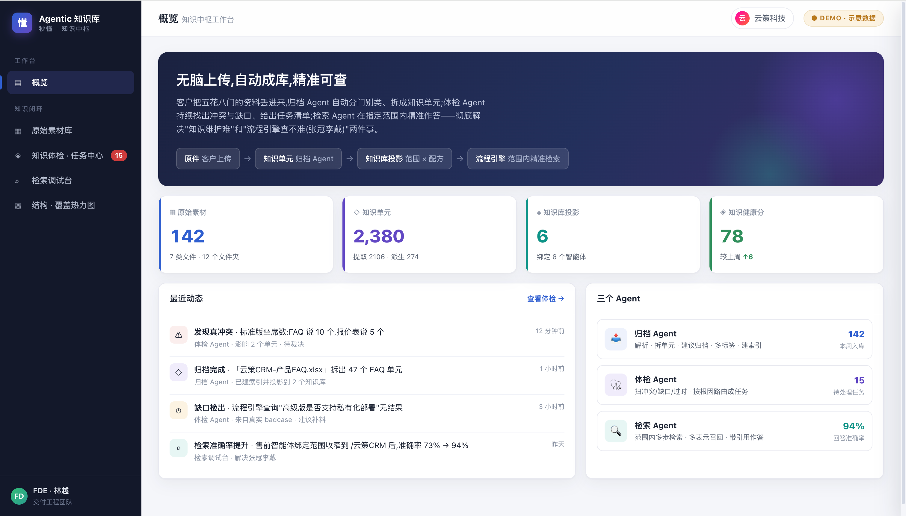
概览页：把上传量、知识单元、投影范围、健康分做成可读的运营面板。
上传素材
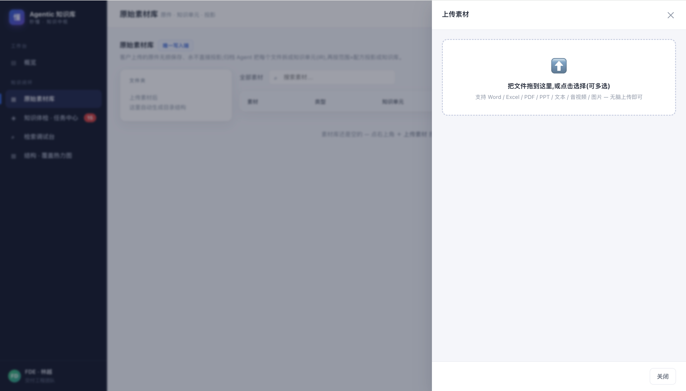
原始素材库：无脑上传，原件无损保存，后续拆单元与投影都基于这层。
初始化
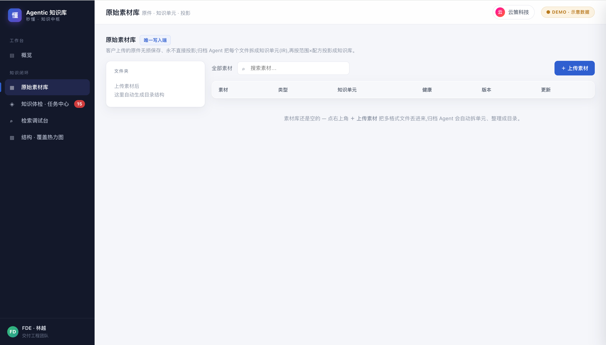
素材入库前：目录结构为空；入库后自动生成可管理的分类树。
素材分组
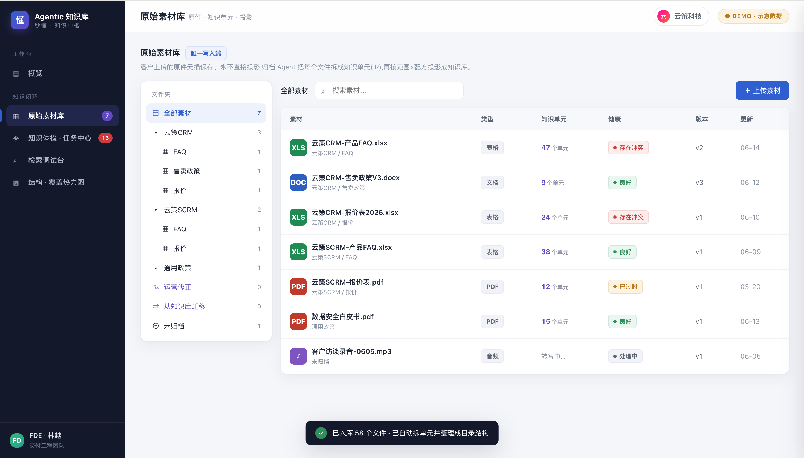
归档建议：按目录（范围）组织素材，后续检索与流程引擎可直接按范围隔离，避免张冠李戴。
选择素材
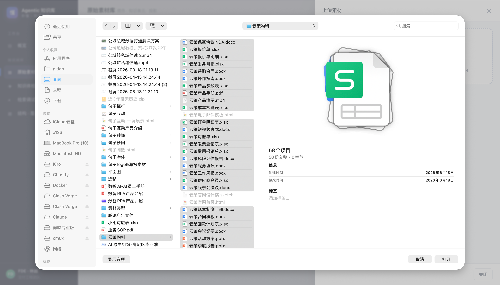
手动选择：支持多文件、多格式一次性上传；归档 Agent 自动解析与归类。
选择后
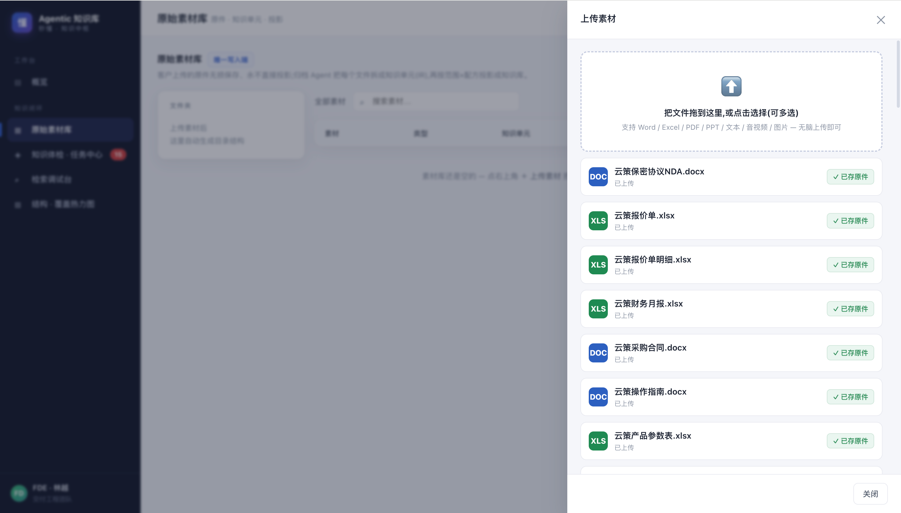
上传后：先确认原件已存，再进入解析与投影流程。
采纳建议
采纳建议：一键入库，自动拆单元、建索引、按范围投影到知识库。
知识体检
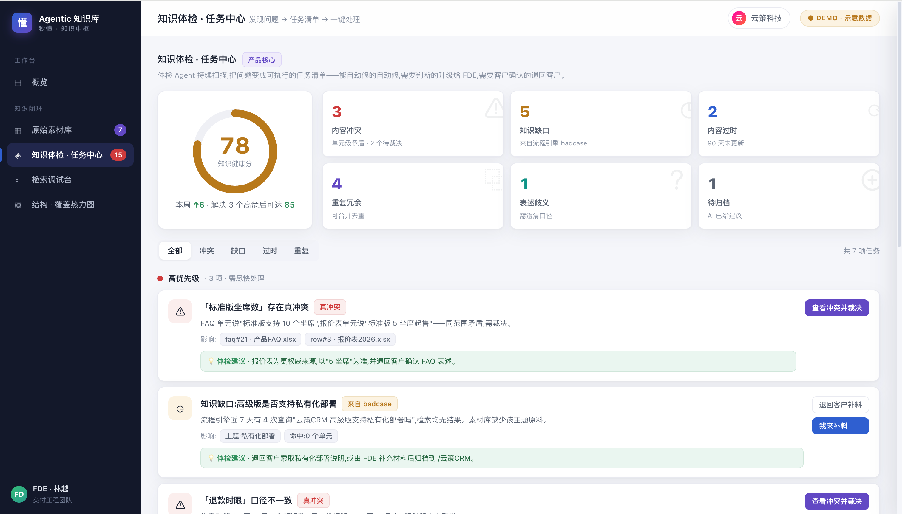
知识体检：把冲突、缺口、过时、重复等问题转成可执行任务清单。
冲突裁决
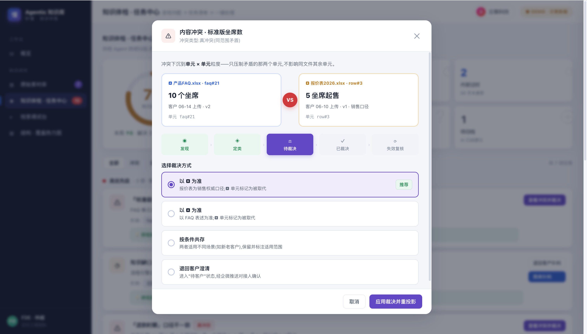
冲突下沉到「单元 × 单元」粒度，裁决只压制冲突单元，不误伤其他知识。
冲突流程
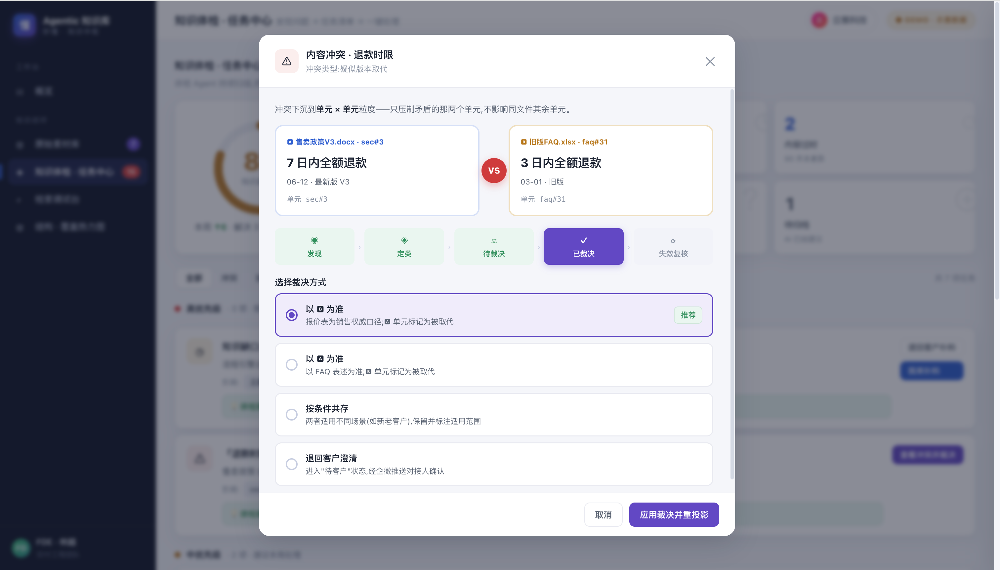
冲突生命周期：发现 → 定类 → 待裁决 → 已裁决 → 失效复核。
合并去重
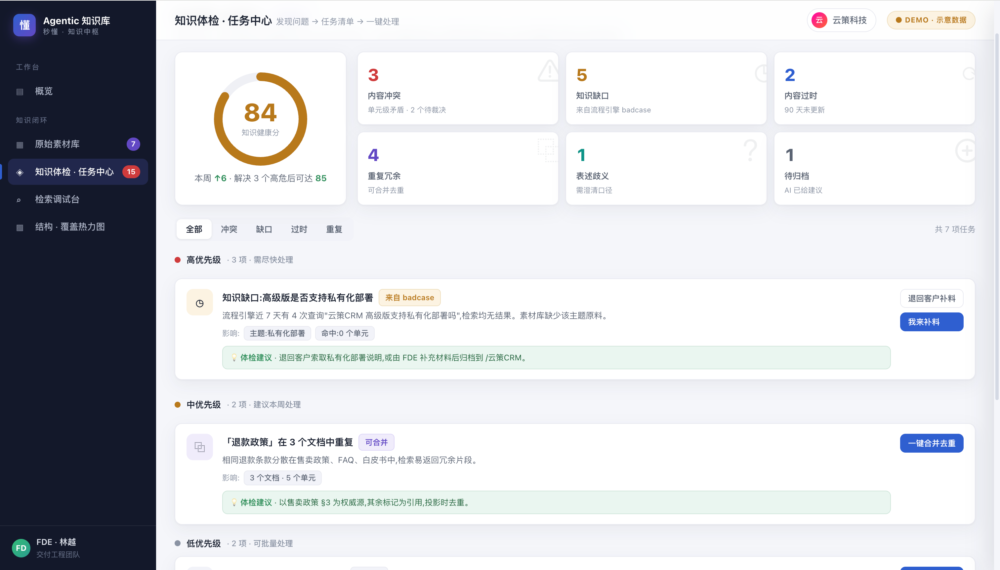
一键合并：以权威源为准，其余标记为引用/取代，投影时自动去重。
检索目录
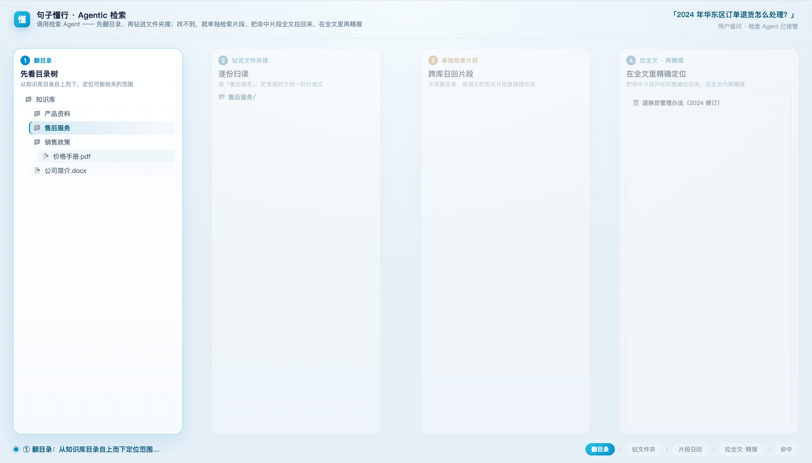
检索范围：目录（子树）就是范围；范围收窄是“查得准”的关键。
召回全文
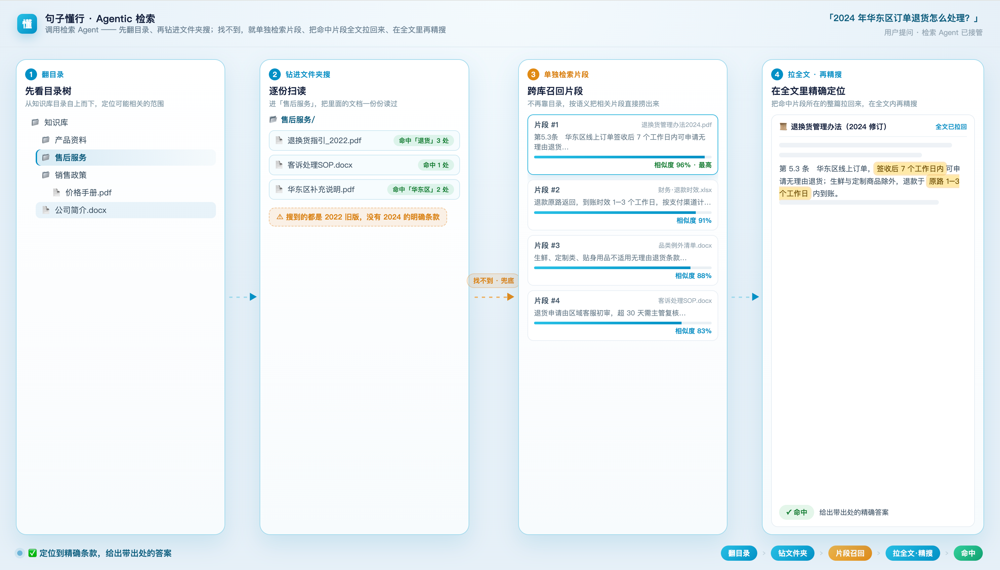
召回：先命中“原件/章节/单元”，再扩展上下文，保证答案有据可依。
片段
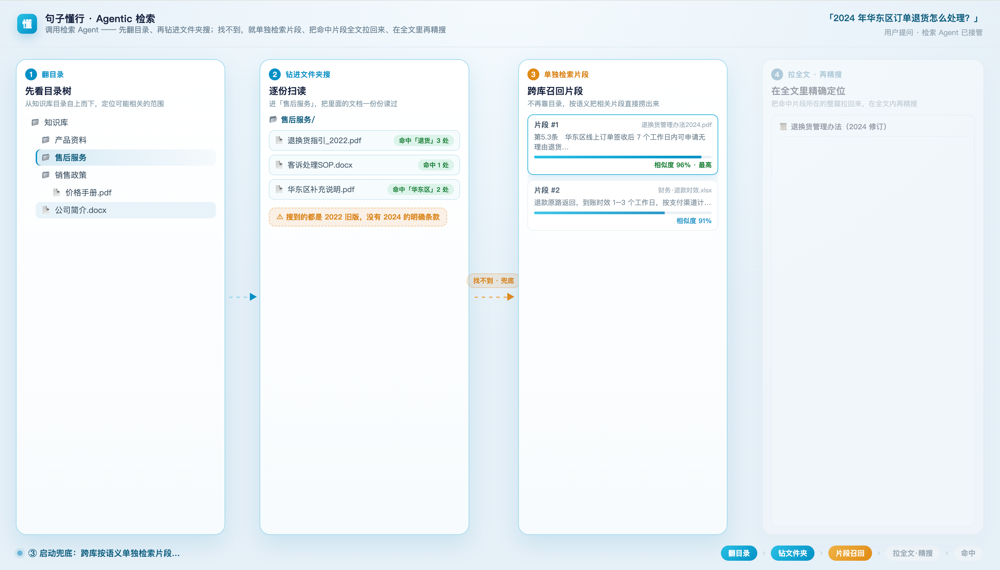
片段：把命中的原文片段与相似度摊开，让回答可核验。
文件
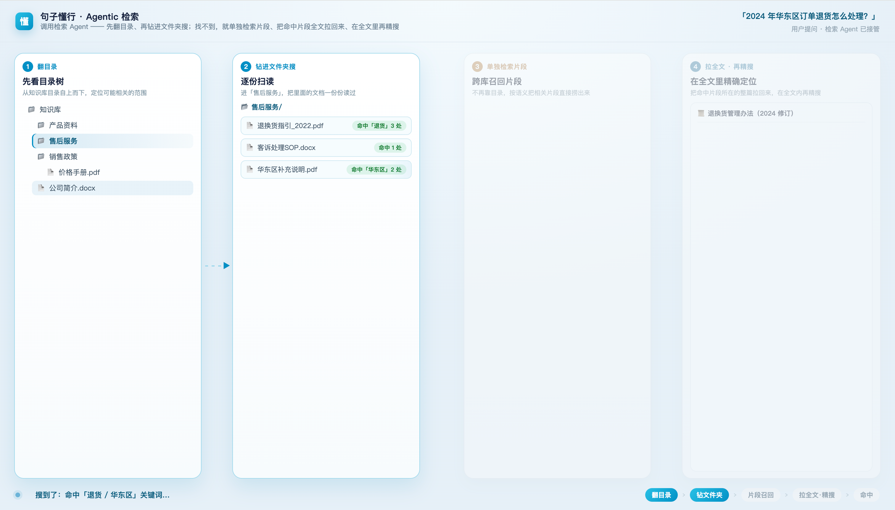
文件级召回：既能按片段回答，也能按文件结构输出与跳转。
先把你的知识工程做对，
再上 AI 员工。
从一个 AI 角色起步，逐步扩展到多个 Agent。90 天内，第一个 AI 员工即在客户的 IM 中上岗。
第一步
知识工程是 Agent 上岗的前提
可追溯
每条回答可追溯出处，而非模型生成
90 天
第一个 AI 员工即在客户的 IM 中上岗